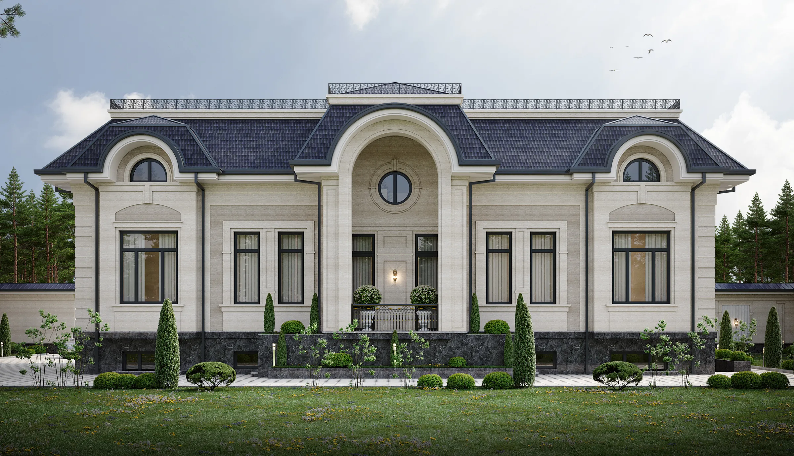
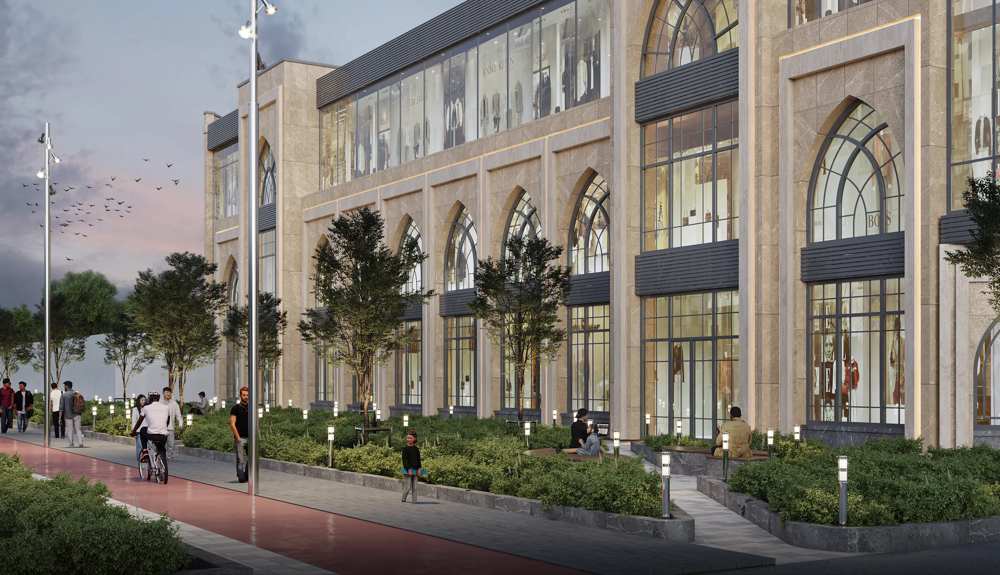
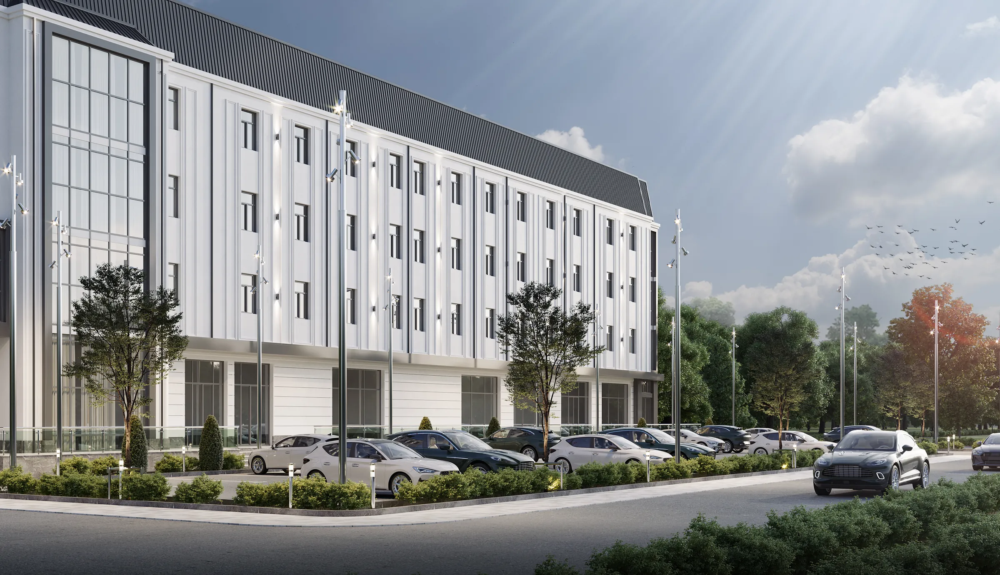
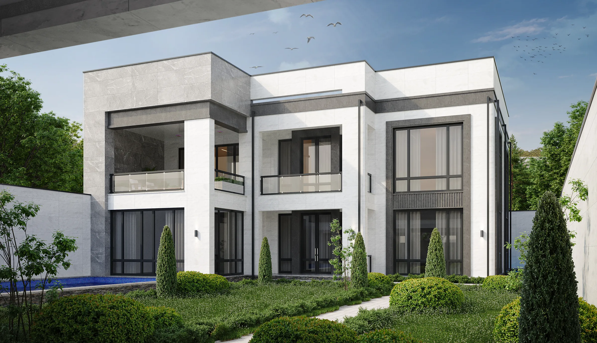

Akmal Gofurov
Architect, exterior designer and 3D visualizer
Based in
Tashkent, Uzbekistan
Practice
5+ years, exteriors and 3D
Software
3ds Max · Corona · AutoCAD · Revit · Photoshop
On the cover
I design building exteriors and present them in photoreal images, from family villas to factories. Clients see the finished building before construction starts.
Selected work
Open a project to see every view
Services
For private clients, developers and industry
Exterior design
Façade concepts, materials and colour for new buildings and reconstructions, usually in two or three options to compare.
Architectural design
Sketch projects and working drawings in AutoCAD and Revit: plans, elevations, sections and the site plan.
3D visualization
Photoreal renders in 3ds Max and Corona: street, courtyard, aerial and evening views, finished in Photoshop.
Site and landscape
Parking, paths, planting and lighting around the building, shown in aerial views of the whole plot.
How a project runs
- Brief and siteProgramme, plot survey, budget and references.
- MassingVolume studies and plan logic on the real plot.
- Façade optionsTwo or three directions in style, materials and colour.
- VisualizationFinal views from the street, the courtyard and the air.
- Approval packagePresentation boards and drawings for review and permits.
About
I am an architect and 3D visualizer based in the Zangiota district of Tashkent. For more than five years I have designed exteriors for private homeowners, developers and industrial companies across Uzbekistan.
My work covers the whole range of everyday architecture: classical and modern villas, apartment buildings, offices and shops, warehouses, factories and farms, and the public space around them. I model and render every project myself, so the images show the building as designed.
Have a plot or a building to design?
Send a site plan, a photo of the plot or a sketch. I will reply with questions and a proposal for the work.